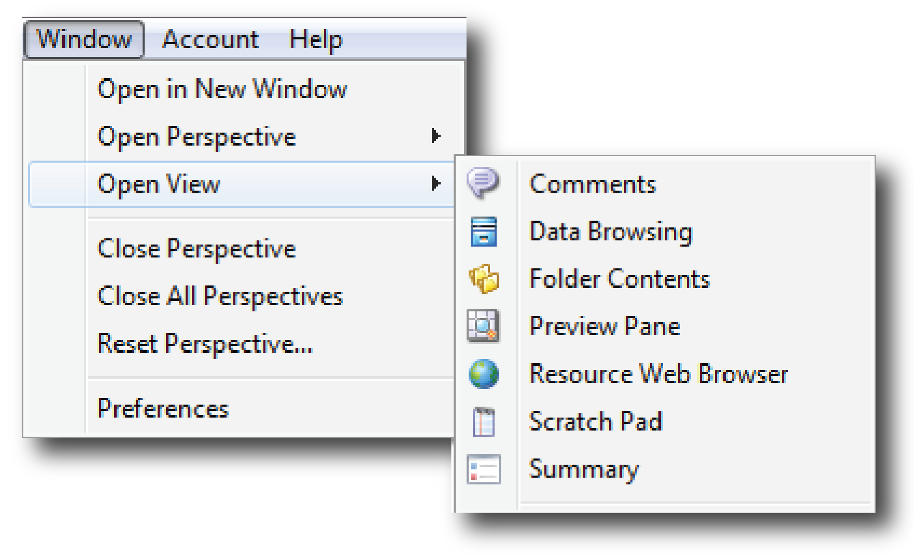

The VELO User Interface was developed with the Open Source Eclipse software known for its Java Integrated Development Environment (IDE). Two terms important to navigating Velo are perspectives and views (Figure 1).
A perspective is the name given to an initial collection and arrangement of views in the user interface. Each perspective provides a set of windows that is tailored to a specific task.
A view is a visual component (or window) within the perspective. Each view is tailored to a specific function.
A perspective can show any number of views (Figure 1).
Figure 1. Typical Perspective Layout in Velo With its Arrangement of Views (Dat Browser)
Velo provides the default perspective shown in Figure 1. In this example, the perspective contains a collection of five separate views: Data Browsing, Summary, Preview, Folder Contents and File Browser. The collection of windows is entitled the Data Bowser perspective.
To open a new Perspective, two ways can be used:

The arrangement of the Views can be changed by dragging the view tabs to different locations within the window. It is aloso possible to resize areas and add or remove views. To add Views that are not displayed in a specific perspective by default, just click on Window > Open View and select the View to be displayed.

Return to the default layout by choosing Window > Reset Perspective At any point of time, several perspectives can be opened simultaneously. Freely switch between these perspectives by clicking on the perspectives shortcut bar. |
To close a perspective, just click on Window > Close Perspective or click on the close button in the Perspective Name Tab (Figure 1).
Velo comes six perspectives that offer different action and presentation sets. The general description of each of them are described below. Click on the link in the table below for a description of each of the perspectives
PERSPECTIVE |
DESCRIPTION / MAIN FEATURES |
| Welcome Perspective (default) - Access to features that will get the user started with Akuna | |
| Allows the user to manage datasets in a directory tree structure specific. | |
| Provides data management process to create and edit datasets. | |
| Provides simple or advances search tools | |
| Provides view information about other users of the Velo server | |
| Allows the user to create teams and provides view information about Velo teams of which the user is a member. | |
| Allows the user to browse remote servers |